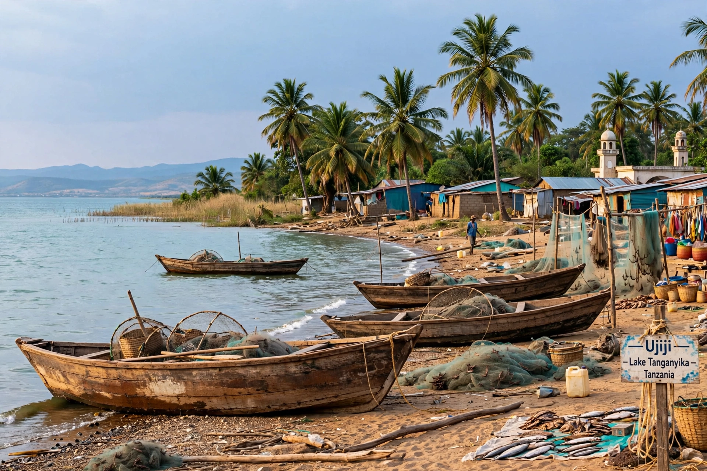

Ujiji is the oldest town in western Tanzania, located about 10 kilometres (6 miles) southeast of Kigoma on the eastern shore of Lake Tanganyika. Historically the southern terminus of a major central African trade route from the Indian Ocean coast, it is famous as the place where Henry Morton Stanley greeted the explorer and missionary David Livingstone in 1871 with the words "Dr Livingstone, I presume?"

| Ujiji | |
|---|---|
| Country | Tanzania |
| Region | Kigoma Region |
| Location | Eastern shore of Lake Tanganyika |
| Known for | Stanley–Livingstone meeting, 1871 |
Ujiji grew in the 19th century as an Arab and Swahili trading post dealing in ivory and enslaved people, linked by caravan routes to Bagamoyo and Zanzibar. Richard Burton and John Hanning Speke reached Ujiji in 1858 during their search for the source of the Nile. David Livingstone arrived in 1866 and used it as a base during his final journeys.
Livingstone had been out of contact with Europe for years and was rumoured dead. The New York Herald sent the journalist Henry Morton Stanley to find him; Stanley's expedition reached Ujiji on 10 November 1871 and met Livingstone under a mango tree, a site now marked by a memorial and museum. The encounter became one of the most celebrated episodes of the age of exploration.
See also: David Livingstone · Henry Morton Stanley · Lake Tanganyika